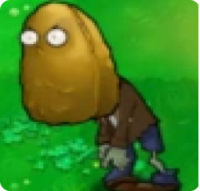

Back to Zombies

Tall-nut Zombie
 Very High
Very High
Level Acquired:
ZomBotany(Minigame)
Because he has a giant nut for a head, Tall-nut Zombietakes a lot of damage before you can defeat him. Just be careful not to spend too long laughing at him, or calling him names like 'nut face', 'shell features' or 'the lanky dead'.
Zombie Description
- Tall-nut Zombie is one of the four zombies exclusive to the mini-game ZomBotany 2, being the zombie counterpart of Tall-nut. It can take huge amounts of damage, much like the Wall-nut Zombie, and is the fifth strongest zombie in Plants vs. Zombies. The Tall-nut Zombie absorbs 2400 damage per shot, and its appearance changes upon absorbing 740, 1480 and 2300 damage per shot before dying at 2400 damage per shot. Just like the other ZomBotany zombies, it does not have a Suburban Almanac entry.
Strategies
- The Tall-nut Zombie has very high toughness. Most instant kills are able to defeat it easily, however it will tank one hit from a Squash or Potato Mine, so be careful when using them. The Hypno-shroom can also easily neutralize it and due to its high health and poor movement speed, the hypnotized Tall-nut zombie will be able to fend off several zombies before it is defeated.
- Chompers are able to instantly destroy a Tall-nut Zombie regardless of its health, so using them to get rid of this zombie is a good idea. However, because he takes 42 seconds to swallow any zombie, the Chomper will likely require support from other plants to fend off weaker zombies and ensure that he only eats the Tall-nut Zombies.
- For the Ducky Tube Tall-nut Zombies, one can use Tangle Kelp to instantly destroy it. If paired with a Gatling Pea Zombie or Jalapeno Zombie at once, these combinations can wreak havoc on your plants if you are unprepared. Of course, since they all eat plants, they can be diverted to an empty pool lane with Garlic and from there ,the fight against it will be easier if the player is using Gloom-shroom or Cattail.